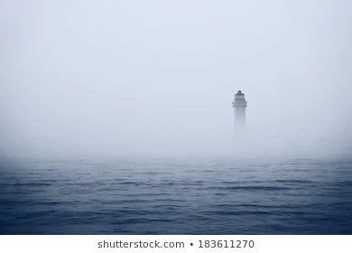
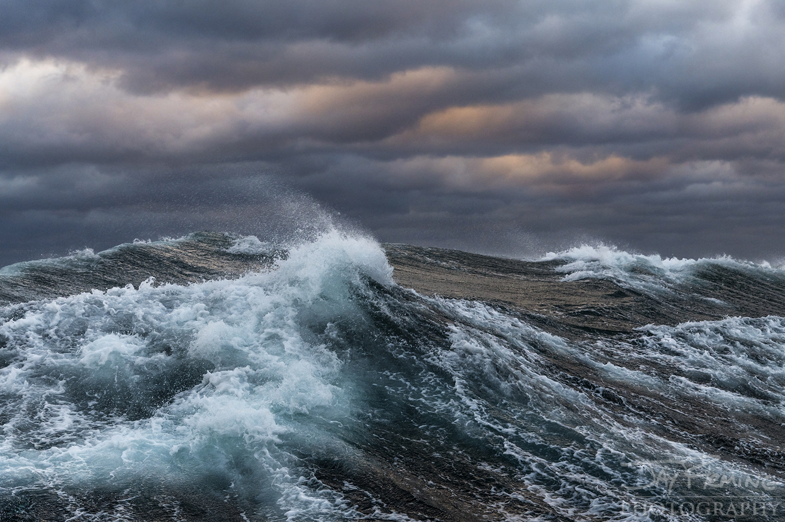

Once a tourist attraction, now unwelcoming and gossiped about, this former vacation spot had become dismal and dispirited. The town stood silently along the coast, not far from the mountains. Tourists from all over the world would come to visit. It was a place known for historical lighthouses, fancy dining, picturesque tree-line streets, cape cod architecture, great surf, a boardwalk littered with pop-up shops, and art galleries. However, this all died down abruptly thirty-five years ago. Thirty-five years ago, on a cool and breezy summer day, two twins, a ten year old boy and a ten year old girl, named Mark and Tessa, went swimming to the lighthouse across the bay. The waters were calm and the siblings were confident they could reach the lighthouse. Out of nowhere it was reported that fog had appeared, the waters got rough, and the sound of a nearby motorboat was heard. The motor boat driver did not see the twins due to the thick fog and he ran over the boy. Mark’s muffled scream made Tessa shriek. Mark supposedly drowned in the bay. Ever since this boating accident, there have been reported sightings of a “so-called ghost of a boy” with his head halfway severed, almost decapitated, screaming for help. Over the years, there have also been reports of random whirlpools and fierce waves wiping out and overturning boats for unexplained reasons. Tourists became afraid and eventually forgot about the seaside town. With these strange happenings, the town lost its appeal and was no longer popular. Residents moved out and restaurants and boutiques moved away. It is believed that the waters of this town were haunted ever since with something sinister lurking beneath.
Now, thirty-five years later, another pair of siblings set out to the lighthouse. The rowboat with its cracks and what looked like dried blood on the seat seemed a little suspicious to the two siblings the moment they stepped into it. The sister had a vague uneasiness. This teenage pair, brother and sister, were renting a boat to take to the lighthouse to explore the town to which they had just moved and in which their mother grew up. They were a little worried about taking the rowboat but decided they would not let anything ruin their day together. It was a chilly Saturday afternoon with looming gray clouds on the horizon and the sun was concealed. It was not the ideal day to go rowing a boat. But the teenagers had been looking forward to seeing the lighthouse they had seen in many family pictures. As they rowed, it became cooler and darker by the minute. The water also became more rough as it splashed up the sides of the boat fiercely. Thick fog rolled in rapidly, closing in on them, which made the siblings feel claustrophobic.
Nevertheless, they kept rowing, hoping at least to see the lighthouse before turning back. Squinting to see through the fog, they spotted another boat moving with no clear passenger onboard. It appeared to be a small rowboat, similar to the siblings’ boat, although it looked broken down and much older than their vessel.
The brother yelled at the boat, “Hello!? Who is there!?"
No response. It left the pair feeling perturbed at both the silence and at the boat that had seemed to appear from nowhere in the fog. Suddenly, a bright light shone through the fog. This oddity caught the attention of the two siblings. They were afraid to move any closer to the phenomenon. Perhaps it was the light from the lighthouse. But they knew that they had not rowed far enough toward the island yet for it to be so close already. Then, as abruptly as the boat appeared, there was suddenly no sign of the boat anywhere. It seemed to have vanished.
The sister, sitting behind the brother, heard a creak very close behind her, followed by a thump, inside the boat. Something lightly tapped her on the shoulder, but it could not have been her brother as he was sitting in front of her. She turned around as a natural reaction without thinking, shivering with fright and wishing she never had the idea to come rowing. Through the thickening fog, she saw a young boy, around the age of ten, looking at her with dark hollowed out eyes. His hair was thin and wet. The girl turned away and almost fell overboard when she realized that the boy’s head was half severed and wobbling slightly. His skin was a tint of blue-gray as if he lacked oxygen. He had pockmarks and sores all over his skin like he had been rotting. He was pale and ghostly. His skin was so painstakingly thin that it was almost translucent with blue veins popping through. He looked the sister in the eye, and shouted, “Tessa! Tessa! It’s you! Why did you leave me? I saved you…..why didn’t you come back for me?”
“I-I am not Tessa so g-get away from m-me!” Before she looked away with disgust, suddenly, she realized that the little boy looked oddly familiar, like she had seen him before somewhere.
The boy stared at them. The waters suddenly became rough and choppy. The waves were knives, slicing the air. The small boy held up his two hands and the brother started slowly rising out of the boat. Miffed and frightened, the brother tried to go back into the boat, but something was keeping him in the air. Suddenly, the rowboat started sinking, water rushed into the boat, and the brother could not do anything about it. The sister cried out for help and the little boy kept staring transfixed on her. Finally, the boat became completely submerged underwater and the little boy disappeared into the deep taking the sister with him. The brother screamed for his sister and then abruptly fell back into the water.
The next morning, the reporter from the car radio outside the hospital announced, “That was some stormy weather and rough waters we encountered last night. A teenage boy was rescued from the waters last evening and is currently in the hospital. A girl is missing and there is no trace of her. It is suspected that she may have drowned. The thunderstorm, ten foot waves, and lightning strikes reminds me of the big storm that hit this town on exactly the same day thirty-five years ago. The cause of the girl’s death is thought to be because of the thunderstorm.
The brother woke up in the hospital, confused and worried about his sister. The doctor told him what happened and showed him the news. The brother then cried for a long time. Then he started to wonder what exactly had happened. What had happened on that extremely confusing day? There was so much fog and… the boy! Who was the boy and why did the boy call his sister, Tessa?
Soon after, a middle-aged woman arrived at the hospital with tears in her eyes. Her mascara was running down her cheeks and her face was distraught with worry. The nurse at the front desk asked, “How may I help you?”
The woman replied tearfully, “I am here to see a patient. I was told he is in room 14.”
The nurse asked, “Only family or close relatives can enter. May I ask if you are related to this patient?”
“I am his mother and my name is Tessa.”